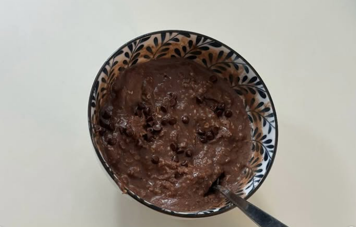

High Protein Egg white Oatmeal

Fast and easy to make!
This is a super meal with low calories and very high in protein that also tastes almost good!
Add some low calorie yoghurt on top for the extra taste!
Ingredients
- Egg whites - 200 gram
- Oatmeal - 40 gram
- Protein powder - 50 gram
- Cocoa Powder - 5 gram
- Chocolate bits - 5 gram
- Yoghurt - 150 gram
How to make:
- Mix egg whites, protein powder and cocoa powder together in a bowl.
- Add and mix in oatmeal.
- Microwave for about 60 seconds, mix the bowl, microwave for another 60 seconds and mix it again. Microwave for another 30 seconds. This is just how I like it, you can try different approaches to this step.
- Sprinkle the chocolate bits on top and pour in the yoghurt on top. The yoghurt should not be mixed in but just lay on top.
Enjoy this high protein meal!